INTRODUCTION
Recent years, motion planning which guides a robot from an initial configuration to a goal configuration without collision has received much attention. Many algorithms have been developed arguably. These algorithms have a common goal of finding a path with low cost, such as low path length or low energy consumption [1]. Sampling-based algorithms are among the most widespread planners and usually are adopted in robotics. These algorithms provide large amounts of computational savings by avoiding explicit construction of obstacles in the state space, as opposed to most complete motion planning algorithms. However, many of these algorithms have a common disadvantage of time consuming, especially in the complex path planning problems or the real-time path planning problems. Therefore, improving the efficiency of the algorithm is urgent and meaningful. Time-consuming is mainly reflected in the collision detection, the expansion process and the path search.
Heuristic planning approaches were proven very beneficial, especially in situations where the dimension of the problems are high. In this paper, a sampling-based heuristic bidirectional fast marching tree (HBFMT*) is proposed for robot motion planning. The algorithm combines the
advantages of the BFMT*[2] and the heuristic planning. The algorithm uses a heuristic function and incremental extension trees between initial configuration and goal configuration. Under the condition of heuristic, the proposed HBFMT* will explore quickly towards the goal and spend less time when finding a feasible path.
The remainder of this paper is organized as follows: In Section II, an overview of the modified sampling-based algorithms were provided. In Section III, we formally proposed the HBFMT*. In Section IV, the extension properties of HBFMT* was analyzed. In Section V, the numerical experiments were performed, and the experiments compared the HBFMT* with other sampling-based algorithms.
RELATED WORK
We give an overview of previous methods that are applicable to motion planning problems for improving the efficiency of the algorithms.
Sampling-based approaches have a critical problem that they spend most of their computational time on checking for collisions. This collision checking uses more than 90% of the total computational time. For example, manipulators and robot arms with redundant degrees of freedom have serious problems of self-collision and collisions with the external environment. Both of these situations will bring troubles to robot motion planning. Some algorithms have been proposed to reduce collision detection, such as lazy PRM [3], Fuzzy PRM [4], Customizing PRM [5], dynamic PRM [6], SBL-PRM [7], and Lazy Toggle PRM [8]. These algorithms are proposed to minimize the number of collision-checks performed during planning. In contrast with the original probabilistic roadmap algorithm (PRM) [9], the planners initially assume that all nodes and edges in the roadmap are collision-free, then search the roadmap for a shortest path between the initial and the goal node. Finally, the nodes and edges along the path are then checked for collision. These algorithms improve the efficiency of path planning by reducing collision detection. The research shows that it’s effective for motion planning problems, especially in high-dimensional and complex environments.
In addition, some sampling-based algorithms have been proposed to improve the efficiency by improving the expansion process. Strategies for improving the extension process include: introducing bidirectional trees, introducing
greed and improving the local optimization. The bi-RRT [10][11] and bi-RRT* [12][13] were proposed. The algorithms grew two trees, one rooted at the initial state xinit and the other rooted at xgoal . The Guided RRT [14]
and the greedy RRT [15] were proposed. Instead of exploring the environments uniformly, these algorithms expand toward the goal greedily along a series of waypoints. The PRM* [16] and RRT* [16] were proposed. They improve the efficiency by improving the characteristics of local optimization. The PRM* algorithm is similar to the sPRM [17], with the only difference being that the connection radius r is chosen as a
allows, and corrects its solution when updated information is received [23]. The MHA* [24] was proposed which worked by running multiple searches with different inadmissible heuristics in a manner that preserved completeness and guaranteed on the sub-optimality bounds. The SBA* (sampling-based A*) [25] was proposed, which introduced the classic A* algorithm to the domain of sampling-based motion planning algorithms. It adopted the RRT* connection strategy and the Anytime A* heuristic, and these drove the growth of the motion-graph more rapidly towards the goal. These algorithms are very effective for solving the high-dimensional path planning problems.
function of n , i.e.
1/d . It is a batch
r r n :
PRM log n / n
The proposed approach which introduces the heuristic
variable-radius PRM, applicable to multiple-query problems, in which the radius is scaled with the number of samples in a way that provably ensures both asymptotic optimality and computational efficiency. The RRT* algorithm was obtained by modifying RRG[15] in such a way that formation of cycles was avoided by removing ‘redundant’ edges, i.e. edges that were not part of a shortest path from the root of the tree (i.e. the initial state) to a vertex. It was proven to be probabilistically complete, asymptotically optimal, and computationally efficient. The FMT* [18] was proposed, which combines the features of RRT* and PRM*. It was proven to be asymptotically optimal (AO) and was shown to converge to an optimal solution faster than its state-of-the-art counterparts, chiefly PRM* [16] and RRT*. The modified BFMT* [1], which takes advantages of the characteristics of FMT* and bi-directional was proven to be faster than other AO algorithms. A new modified asymptotically-optimal motion planning algorithm called MPLB [19] was proposed, which is done without performing expensive local planning. These algorithms improve the efficiency of path planning by improving expansion process, especially improving the local planning, and have been found to yield much better performance.
Some algorithms have been proposed to improve the efficiency by introducing heuristic to accelerate the convergence. The most classical heuristic algorithms are the A* [20] algorithm and its variant, such as ARA* (Anytime Repairing A*) [21], LPA*(lifelong planning A*) [22] and AD* (anytime dynamic A*) [23]. The A* algorithm guides its search towards the most promising states, potentially saving a significant amount of computation. The main reason is that it has a heuristic cost function, and the function can make it improve the search speed. The ARA* algorithm is an efficient anytime heuristic search, and it also runs A* with inflated heuristics in succession but reuses search efforts from previous executions. The LPA* is an incremental version of A* which repeatedly finds shortest paths from a given start vertex to a given goal vertex while the edge costs of a graph change or vertices are added or deleted. Its first search is the same as that of a version of A*, and that breaks ties in favor of vertices with smaller g-values. But many of the subsequent searches are potentially faster because it reuses those parts of the previous search tree that are identical to the new one. The AD* continually improves its solution while deliberation time
strategy to the BFMT*. We analyzed the extension characteristics and made a comparison with other algorithms.
PROPOSED APPROACH
The proposed approach called Heuristic Bidirectional Fast Marching Tree (HBFMT*), it is an improvement of the BFMT* method. Before introducing the HBFMT* algorithm, we simply describe the BFMT* algorithm.
The BFMT* Algorithm
The BFMT* algorithm performs a “lazy” bi-directional dynamic programming recursion over a set of probabilistically drawing samples in the configuration space. The expansion generates two trees which rooted at xinit and xgoal
in the configuration space, respectively. Although the algorithm has a faster search capability than other algorithms. However, it still extends a lot of points when finds a feasible path. The insufficiency is also reflected in its original version FMT*. The following, the specific example was used to analyze the shortcomings.
The BFMT* has the same extension process as FMT*, the only difference is that it incrementally extends two trees. So we take the FMT* as an example to analyze the expansion process, as is shown in Figure 1. The algorithm extends 4 layers when it found a feasible path, and each layer is a disk-connected graphs. In detail, when solving the point-to-point path planning problems, it takes the xinit (in Figure 1 is point0 ) as its root and begin to expand the points in Layer 1 (points 1, 2 are visited). When the extension of
Layer 1 is completed, the Layer 2 begins to expand, and the points 3, 4,5 are visited. Until it finds a feasible path, it extends four layers and 10 points are visited. The final path
formed by the ordered points 0 2 5 10 . The points
1,3, 4, 6, 7,8,9 are visited in the extension, but they are not existed in the final path. Considering that if the algorithm only visits the partial sampling points that related to the final path (in Figure 1, in ideal area) in the extended process, it will
significantly reduce the time of path planning. So the heuristic was introduced to the BFMT* to improve the efficiency of the algorithm.
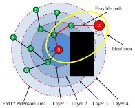
12:
x .V
z arg min
b b open
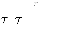
f xb
13:
Swap a , b
14: end while
15: return path
A typical tree consists of a vertex set V and an edge set E . In our algorithm, two special set are also included in the tree’s data structure, namely the unvisited vertex set Vunvisited and the
open vertex set Vopen
. So a tree could be represented
Figure 1. The extension of FMT* algorithm
asV , E,Vunvisited ,Vopen . The set .V consists of all visited nodes.
The set .E consists of all edges. The set
.Vunvisited consists of all
The Proposed HBFMT* Algorithm
In this section, we formally present the HBFMT*. The
sampling points which have not yet been considered for addition to the incrementally grown tree of paths. The
main framework of the algorithm is shown in pseudo-code
set
.Vopen contains samples that are currently active, in the
Algorithm 1. The HBFMT* introduces the heuristic strategy
sense that they have already been added to the tree and are
and implements a bi-directional tree by simultaneously
candidates for further connections to samples in
.Vunvisited .
alternately expands two trees in the collision-free
Let Xsample be a set of points sampled independently and
configuration space. Before discussing the algorithm, it is
necessary to introduce the primitive procedures that it relies
identically from the uniform distribution on
free . The
on.
connection radius r n is selected refer to BFMT* [1]:
(1). SampleFreen returns a set of n points which sampled
1 1 1
1 d d d
r n 4 1 d 1
free
log n
(1)
independently from uniform distribution free . (2). Near V , x, r
d
n
d
returns the set of samples s V s x r .
(3). CollisionFreex1, x2 be a function that detects whether the straight line segment connecting x1 and x2 is contained in free . (4). c x1, x2 returns the cost by connecting x1 to x2 . (5). g x and h x returns the cost from xinit to x and the estimated cost
For a parameter 0 is some small constant, d is the dimension of the space , d is the volume of the unit ball in the d -dimensional Euclidean space, and free denotes the Lebesgue measure of the obstacle-free space.
Algorithm 2: Sub-function of HBFMT* algorithm
from x to
xgoal
, and
f x 1 g x hx .
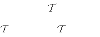
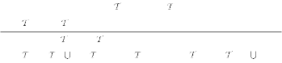
1: function Initiallize X , x0 , xgoal
path PathSearch a ,
b, xm returns a path which consists of
2: .V , .E ,
.Vopen ,
.Vunvisited X
two fragments. One fragment is from xinit to xm and can be
3:

found in a , and another is from xm to xgoal and can be found
Add
1: function
, x0
Add
, x

in b . Two fragments are connected at xm .
2: .V .V
x , .V
.V
\ x , .V
.V
x
AddNewSample n
performs n new sampling.
unvisited unvisited open open
Swap a ,


b swaps two trees a and b . (9). TimePermits()
The detailed description of the algorithm is as follows:
used as a condition of termination.
First of all, a set of n configurations in free is determined
by SampleFree n , and saved in the set Xsample (Algorithm 1 line
Algorithm 1: HBFMT* xinit , xgoal , rn , n,

1). Then two trees (
a and

b ) initialized using the Algorithm
1: Xsample SampleFreen
2 function:
Initiallize X , x0 , xgoal procedure. One tree rooted
2: a Initiallize Xsample , xinit , xgoal ,
b Initiallize Xsample , xgoal , xinit
at x and another rooted at x . Let z denote the currently
init
goal
3: z xinit , xm , path
4: while TimePermits() do
expanding node, and the initial z xinit . Let xm denote the connection node that two trees meet, and the initial xm .
5: a ,
b , xm Expand a ,
b , xm , z,
Let path denote the final path, and the initial path . Once
6: if xm then
the initialization is completed, the trees start to expand using the Algorithm 3 procedure.
7: path PathSearch a ,
b , xm
8: continue
Algorithm 3: function a ,
b , xm Expand a ,
b , xm , z,
9: else if IsEmpty
b .Vopen then
1: Z
Near .V
, z, r
10:
AddNewSamplen
near a unvisited n
2: for all x Znear do
11: end if
3: Xnear Near
a .Vopen , x, rn
4:
The FMT* and the BFMT* have the same extension
a near
xmin arg minx X
g xa
g xa , x
process, so we modeled the FMT* as an example. It
5: if CollisionFreexmin , x then
incremental extension tree rooted at xinit , by defining the
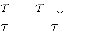
6: a .E
a .E
xmin , x
extension radius r , with r increased, the tree extends outward,
7: a Add
a , x
and ultimately covered the entire space, as is shown in Figure
8: f x= 1 g x+hx
2, the red area is already searched. The two trees of the HBFMT* has the same extension process, so we take one of
g x | x
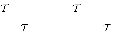
a + g x | x
b
the trees as an example. It introduced a heuristic function that
9: if x
b .V &&
< g x
| x
+ g x
| x
then
10:
xm x
m m a
m m b
makes the choice of expanding nodes more directional, and
this speeds up the search speed of the algorithm and makes the
11: end if
12: a .Vopen
13: end if
a .Vopen \ z
algorithm converge as soon as possible. The detailed analysis
process is as follows:
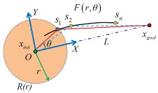
14: end for
Let Znear denote a subset of a .Vunvisited within a ball of radius rn centered at sample z (Algorithm 3 line 1). For each
sample x , x Z
near
, the HBFMT* finds all its neighbors

within a .Vopen , called them X near (Algorithm 3 line 3). Then the algorithm evaluates the cost of all paths to x , and the cost obtained by computing paths to nodes xa , referred to as local
one-step connections (Algorithm 3 line 4). Note that this step lazily ignores the presence of obstacles. The HBFMT* then
Figure 2. The modeling of the FMT* and the HBFMT* extended area.
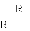
In the d configuration space, let r be the extension radius,
selects the path with the lowest cost to x , and let xmin denote the
and r
r
d . Let
R r
denote the current extension sphere with
s denote the point on the
lowest cost connected point. If the edge xmin , x is
radius
, as is shown in Figure 2. Let 1
R r , and is currently selected for expanding. The total

collision-free, then it is added to the a .E . The node x is added to the a , and its cost is updated (Algorithm 3 line 8). The cost is combined with the heuristic function. The selection of determines the proportion of g-cost and h-cost in the total cost, and this will affect the speed and accuracy of the algorithm. The node xm is updated if the node x is found in b .V and the cost is lower than the previous path (Algorithm 3 line 9-11). Then the node z is removed from a .Vopen , and the
node z is updated from b .Vopen (Algorithm 3 line 12). After that,
sphere
cost of node s1 using the FMT* algorithm can be represented as:
fFMT* s1 = gFMT* s1 = r (2)
Obviously, the sampling points which have the same total cost with s1 are on the sphere R r . The points which fall on the sphere R r will be selected for expansion in turn. In other words, the extension surface of the FMT* is a d-dimensional sphere. With the expansion, all sampling points on the
two trees are swapped to ensure the expansions are alternated.
sphere
R r
will be selected for expansion in turn.
0,1 .
If the xm is not empty, that is to say the two trees have common nodes, then the path path is updated (Algorithm 1 line 7). If
Let
Let
denote the weight of HBFMT* algorithm, the
be the angle between line Os1 and X-axis, the 0, 2 .
the b .Vopen is empty, the new sampling will be implemented to
ensure that the algorithm continues to expand (Algorithm 1 line 10). The algorithm will terminate within a given time.
Let L be the distance between the initial state and the goal
state, as is shown in Figure 2. For the total cost of s1 using HBFMT* algorithm can be represented as:
fHBFMT*
s1 = 1 r
L2 r2 2Lr cos
0 2
(3)
ANALYSIS AND DISCUSSION
The proposed algorithm HBFMT* has better capabilities compared to other algorithms, such as its original version. In this section, the extension characteristics of FMT*, BFMT* and the proposed method are analyzed. The analysis are performed by two steps. Firstly, the extended area of these three algorithms are modeled. Then, the extended area are drawn intuitively using the MATLAB. Through the modeling and drawing of the extended regions, it is easy to find that the proposed method has faster search capabilities than others. The main reason is that it expanded less area than others when it found a path.
It is easy to find that total cost of FMT* is related to the extension radius r . With the increase of the radius r , the final expansion area of the algorithm is a d-dimensional sphere. However, for the HBFMT*, the total cost is related to the extension radius r and the weight . The final expansion area will be a d-dimensional compressed sphere. In order to make the extended area more intuitive, we use MATLAB to plot the whole extended area in 2-dimensional configuration space respectively, as shown in Figure 3. The green area indicates the extension area of the FMT* algorithm, and the blue area indicates the extension area of the HBFMT* algorithm with weight 0.3 . In the comparison, we choose the relevant
parameters: xinit 0, 0 ,
xgoal 100,100 and
f 20,80 . The
at xinit expands a tree incrementally. With the sampling points
extended area for each algorithm is composed of a series of concentric circles. With the increase of extension radius r , the concentric circles extend outwards. According to the previous analysis, points on the same circle all have the same total cost, and with the expansion of the algorithm, the total cost is gradually increased. As shown in Figure 3, these two algorithms have the same total cost in the ultimate expansion. It is easy to find that the HBFMT* extension area has cover the target point xgoal . However, the FMT* extension area does
not cover the target point. Through the comparison of the extended area, we found that HBFMT* has the search characteristics that are more toward the target point. However, the extension of FMT* spreads uniformly outward from the initial state. Meanwhile, the HBFMT* introduces the bi-directional trees, so the HBFMT* will have a faster search characteristics than the BFMT*.
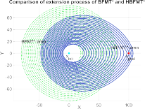
Figure 3. Comparison of the extended area of the FMT* and the HBFMT*
EXPERIMENT
In order to thoroughly evaluate the capabilities of the proposed algorithm, two experiments are conducted. One of them is the comparison of the visited points and path cost of the proposed algorithm and its original version. The second experiment is to compare the execution time and solution cost of the proposed algorithm and other asymptotic optimization algorithms, such as RRT*, FMT*, BFMT*. In this paper the dynamic constraints are neglected and the different environments are tested by the number of samples and planning. All calculations were performed on a computer with
expanded, the tree (on the map in green) extends outward, and ultimately covered the entire space, and a path was found (on the map in red line), as is shown in Figure 4 (a). The modified algorithm BFMT*, which implements a bi-directional trees (one with the xinit as the center, and another xgoal , on the map,
with green and blue, respectively) through the configuration space, as shown in Figure 4(b). The BFMT* terminates when two trees meet in the extension process. Compared to the FMT*, the BFMT* has fewer expanded nodes, and the statistics show that BFMT* reduced 32.6%.
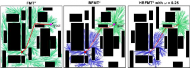
(b) (c)
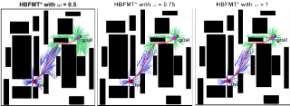
(d) (e) (f)
Figure 4. The comparison of extension tree of the three different algorithms: FMT*, BFMT* and HBFMT*. (a) The FMT* extension tree. (b) The BFMT* extension tree. (c-f) The HBFMT* with weight. =0.25, 0.5, 0.75,1 .
TABLE I. THE EXPERIMENTAL RESULTS OF THE VISITED NODES AND
EDGES.
FMT* | BFMT* | HBFMT* with | ||||
0.25 | 0.5 | 0.75 | 1 | |||
V | 1754 | 1183 | 880 | 537 | 432 | 415 |
E | 1753 | 1182 | 879 | 536 | 431 | 414 |
However, the newly proposed algorithm HBFMT*, it uses a heuristic approach to generate two trees that rooted at x and x (on the map, with blue and green, respectively),
an Intel Core i5, 2.3 GHz CPU and 8 GB RAM, and using a
init
goal
single-thread MATLAB implementation.
Comparison of Visited Points and Path Cost
In this section, the extension characteristics of the proposed algorithm and its original version FMT*, BFMT* are verified. These three algorithms are compared in the same complex obstacles environment, as shown in Figure 4. These algorithms all have the same start point xinit and goal point xgoal .
Further, in order to make the comparison more meaningful, these algorithms all have the same sampling points and connecting radius. In this experiment, 2000 points are sampled, and then the different algorithms are executed by using the same sampling set. The results of the experiment are
as shown in Figure 4(c-f). In Figure 4(c), the weight =0.25 ,
compared to the BFMT*, the algorithm has fewer expanded nodes, and the statistics show that it reduced 25.6%. In Figure 4(d), the weight =0.5 , compared to the BFMT*, it reduced 54.6%. In Figure 4(e), the weight =0.75 , compared to the BFMT*, it reduced 63.5%. In Figure 4(f), the weight =1 , compared to the BFMT*, it reduced 64.9%. When a feasible path is found, the FMT* algorithm almost expanded the entire configuration space and the BFMT* extended a half of the space. However, the extended space is quite narrow when using the HBFMT* algorithm. Through the comparison of the cardinality of the node set V generated by each algorithm, it is easy to find that the HBFMT* significantly reduced the
shown in
Table I . In particular, the FMT* which rooted
visited nodes than the other algorithm. The main reason is that
it combined with the characteristics of the bidirectional-tree
and heuristic search features.
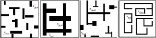
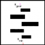
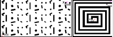
Room map 1 (b) Room map 2 (c) Room map 3 (d) Room map4
(e)Narrow passage (f) Dense obstacles (g) Maze Figure 5. 7 different classical environments for path planning problems
simulation
We further analysis the characteristics of the different of HBFMT*, and 7 different classical environments are chosen for testing. These environments include a variety of room maps, narrow passage, dense obstacles and maze, as is shown in Figure 5. For each environment, we select the same sampling points and connecting radius, and 50 tests for every environment are executed, and the mean path cost and mean visited points of each algorithm are calculated. The final test results are shown in Table III. Through the comparison of the experimental results, it is easy to find that HBFMT* can search for the optimal path in almost all environments. In the worst case, such as shown in Table III Room map 2, the difference between the path cost of FMT* and HBFMT* is 0.11~1.1, the path cost has little difference. However, compared to the FMT*, the mean visited points of HBFMT* is reduced 5.7%~7.45%, the proposed algorithm visited much less points, and it means that it will take less time when searched for an optimal path. For the HBFMT*, with the increase of the , the mean path cost tends to increase, but it doesn't change much. However, the mean visited points almost showed a trend of decreasing greatly. It is easy to find that in most environment, when varies from 0.25 to 0.5 , the number of mean visited points decreasing greatly, and when 0.5 , 1 , the number of mean visited points are decreased slowly and final stability in a range. For each environment, the minimum number of visited points appears
at [0.5,1] , therefore, when is in this range, the HBFMT* will have a faster planning ability.
Comparison of the Execution Time and the Solution Cost
In this section, the numerical path planning experiments are provided that compare the performance of the proposed algorithm with other sampling-based AO path-planning algorithms, such as BFMT*, FMT*, RRT*. We queried the planning algorithms for a series of sample counts, and recorded the execution time and solution cost of the algorithm returned. We present the numerical simulation results (time cost versus different solution distribution and average solution cost). Two environments are considered: (a) “Bug trap” and (b) “Maze” in Figure 6. The relevant test parameters are shown in Table II.
TABLE II. THE EXPERIMENTS PARAMETERS.
Map
Initial state
Target state
Test times
HBFMT*, BFMT*, FMT*
RRT*
radius
Sampling points
step
radius
(a)
(230,160)
(50,160)
2820
50
100~1500
5~70
50
(b)
(330,190)
(200,190)
1120
50
150~700
5~70
50
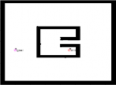 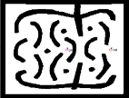
Bug trap (b) Maze
Figure 6. Environment for path planning problems simulation
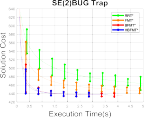 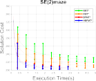
(b)
Figure 7. Simulation results for the two different environments
TABLE III. THE DIFFERENT OF HBFMT* ANALYSIS IN 7 DIFFERENT ENVIRONMENTS
Map | Initial state | Target state | Sampling points | Mean path cost(mm) | The number of mean visited points | ||||||||||
FMT* | BFMT * | HBFMT* with | FMT* | BFMT* | HBFMT* with | ||||||||||
0.25 | 0.5 | 0.75 | 1 | 0.25 | 0.5 | 0.75 | 1 | ||||||||
(a) | (10,10) | (90,90) | 4000 | 116.96 | 116.97 | 116.94 | 118.89 | 121.53 | 122.48 | 3997 | 3746 | 3392 | 1914 | 1462 | 1491 |
(b) | (20,10) | (50,30) | 3000 | 260.38 | 260.45 | 260.49 | 260.51 | 260.57 | 261.48 | 4000 | 3771 | 3736 | 3702 | 3709 | 3707 |
(c) | (20,20) | (110,300) | 2000 | 634.88 | 634.93 | 633.90 | 634.47 | 641.05 | 645.72 | 1955 | 1465 | 1389 | 1116 | 918 | 932 |
(d) | (150,250) | (300,350) | 5000 | 334.14 | 334.02 | 333.49 | 333.05 | 337.30 | 339.37 | 4782 | 4298 | 3213 | 1243 | 729 | 715 |
(e) | (170,20) | (150,300) | 4000 | 575.79 | 575.84 | 575.67 | 575.32 | 577.12 | 577.14 | 3884 | 3526 | 3123 | 934 | 857 | 862 |
(f) | (20,15) | (530,270) | 4000 | 677.94 | 678.57 | 678.14 | 676.98 | 680.98 | 684.63 | 3277 | 3164 | 3153 | 2751 | 2465 | 2467 |
(g) | (220,190) | (370,370) | 5000 | 363.84 | 362.79 | 362.77 | 362.90 | 363.78 | 363.96 | 4903 | 4883 | 4880 | 4877 | 4856 | 4776 |
In detail, the execution time and solution cost of each successful test result were counted. We take the execution
time and solution cost as axes respectively, and the statistical distribution of all the experimental results can be acquired.
Then, the curves of the execution time and solution cost of each algorithm were drawn respectively, and the solution cost variance of a given execution time were calculated, as is shown in Figure 7. The high quality nodes are located in the lower left corner, and that means the lower time cost obtained the lower solution cost. The plots reveal that both HBFMT* and BFMT*for the most part outperform FMT* as well as RRT*, even the proposed HBFMT* has faster convergence rate than the BFMT* in the “Bug trap” environment, especially when the execution time is at 0-1s. At the same time, with the increase of execution time, the solution cost of the proposed algorithm gradually, finally stabilizes, and its variance gradually decreases, finally tends to be stable.
CONCLUSION